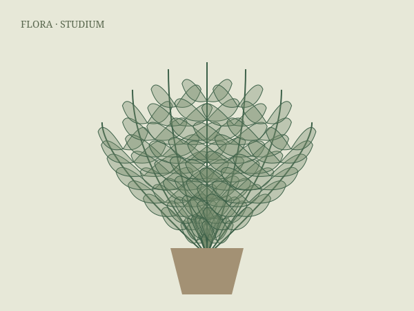

Папоротники
Разные регионы мира; класс, а не отдельный вид
Папоротник в сосуде связан с наблюдением Уорда 1829 года.
Закрытый стеклянный сосуд
Исторический контекст ↗Стартовый каталог групп растений. Видовые карточки будут добавляться по мере проверки ботанических и исторических источников.
Разные регионы мира; класс, а не отдельный вид
Папоротник в сосуде связан с наблюдением Уорда 1829 года.
Закрытый стеклянный сосуд
Исторический контекст ↗
Зависит от вида; бонсай — техника выращивания
Живые миниатюрные композиции в японской культуре.
Контейнерная культура; не обязательно в помещении
Исторический контекст ↗
Преимущественно тропики и субтропики
Оранжерейные коллекции Кью.
Оранжерея; семейство, а не отдельный вид
Исторический контекст ↗